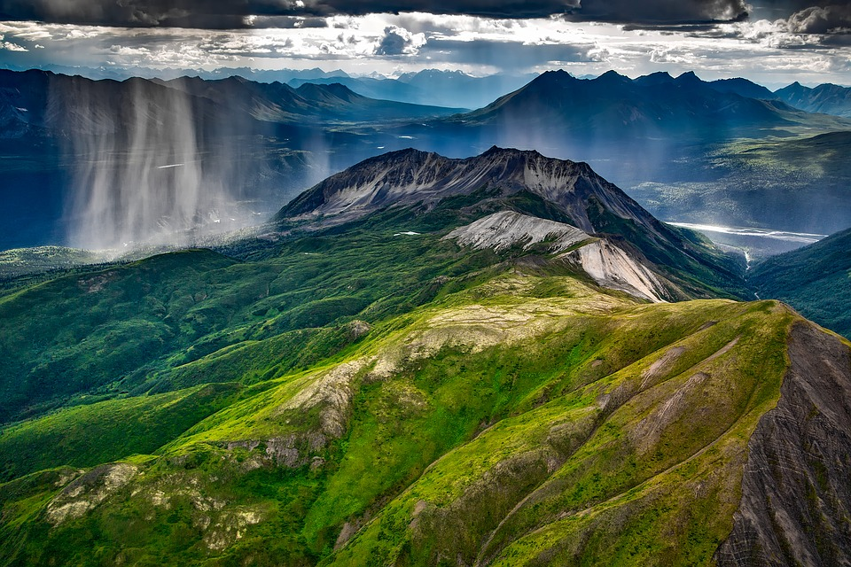

Faktoja:
Pohjois-Suomessa kasvien kasvu on hidasta kylmän sään ja maaperän vähäravinteisuuden takia.
Talvella lumi suojaa kasveja niin, että pakkanen ei pääse niitä tuhoamaan.
Metsäkasvillisuus on sopeutunut ankariin oloihin.
Kasvy päättyy jo elo-syyskuussa, ja kasvit valmistautuvat talven lepoon.
Tunturien sanastoa:
pahta = jyrkkä kallioseinämä
kuru = tunturirotko
rakka = kivilouhikko
gaissa = iso tunturi, jossa huipulla oleva lumi ei sula